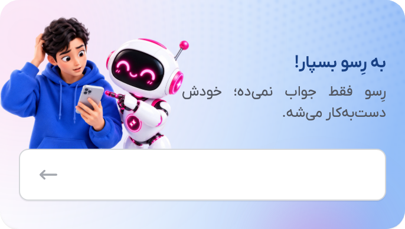
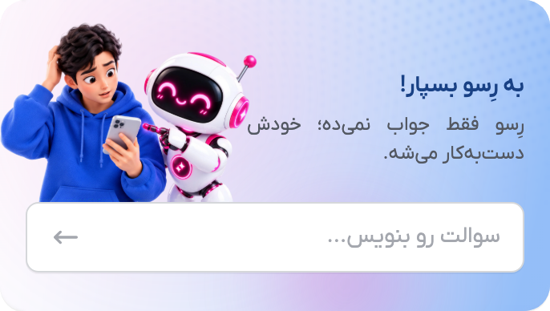
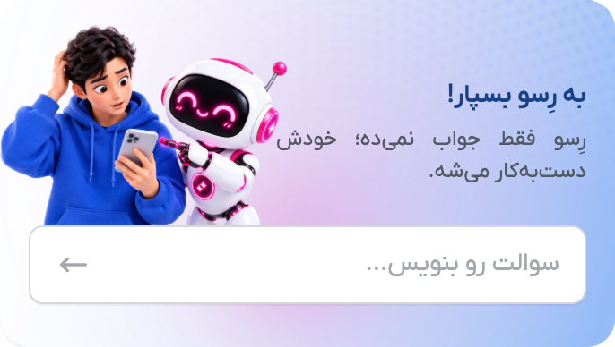
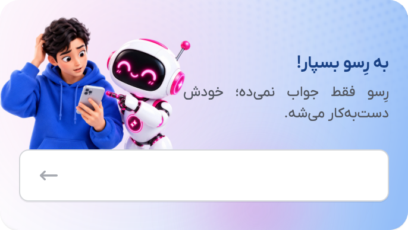
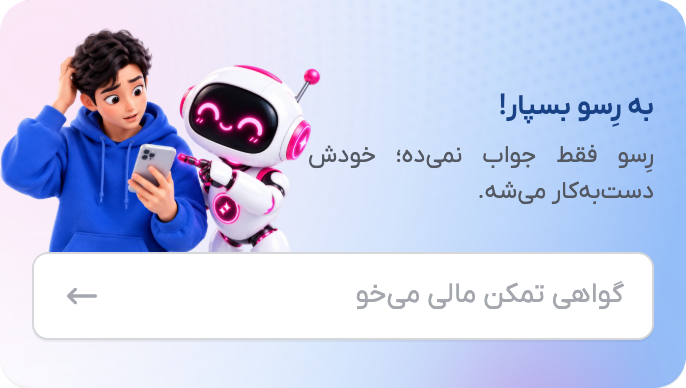

7.5-second circle loop; other background layers keep their 9-second loop. Background layers move; person, robot, caption and live typing field keep fixed bounds.
Implementation and layer mapping




